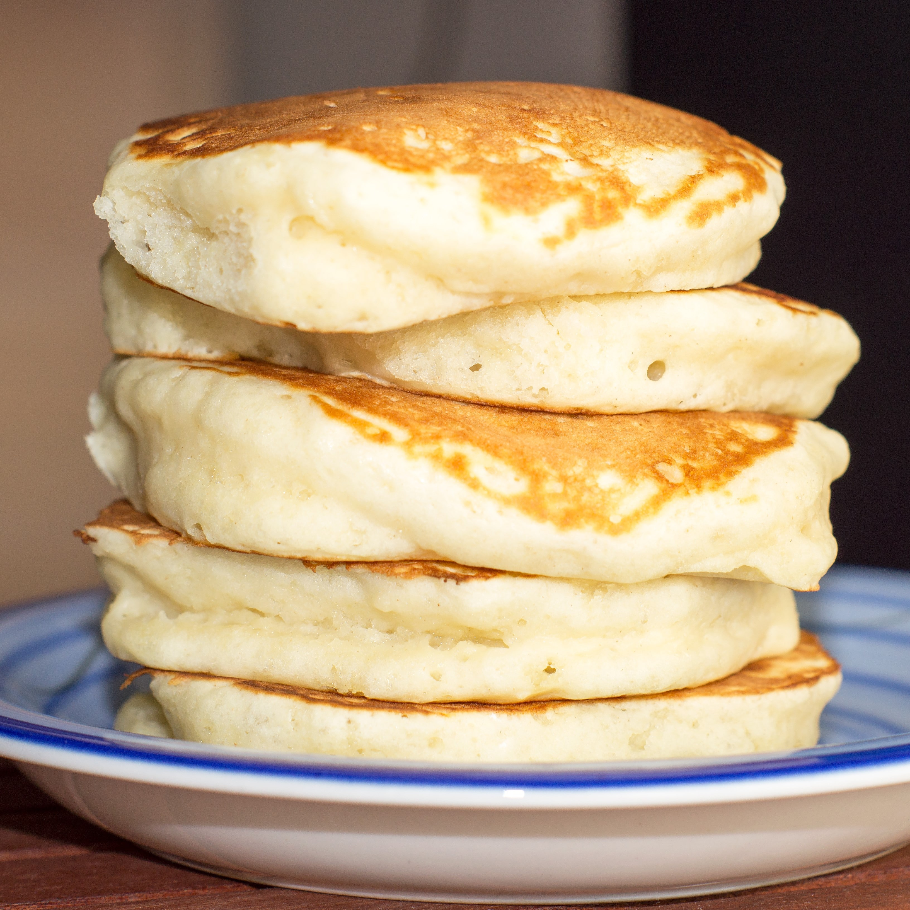

The Starving Artist Cookbook
Fluffy Pancakes
Total Time 20 min
Makes 8 Pancakes

Ingredients:
- 1 cup all-purpose flour
- 2 tbsp sugar
- 1 tbsp baking powder
-
1
/4 tsp salt
- 1 cup milk
- 1 large egg
- 2 tbsp melted butter (plus more for cooking)
Instructions:
-
In a bowl, whisk together flour, sugar,
baking powder, and salt.
- In another bowl, mix milk, egg, and melted butter.
-
Pour wet ingredients into dry and stir until just combined
(a few lumps are fine).
- Heat a nonstick pan over medium heat and butter lightly.
-
Pour1/4
cup batter per pancake. Cook until bubbles form,
then flip and cook until golden.
Baffalo Chicken Dip
Total Time 2hr 10min
Makes 2 Serevings

Ingredients:
- 4 cups cooked chicken breast shredded
- 8 ounces cream cheese
- 1 cup ranch dressing
- 3
/4 buffalo sauce
- 11/
2
cups cheddar cheese shredded
- Green onions thinly sliced, for garnish
- Tortilla chips for serving
Instructions:
-
Combine cooked chicken, cream cheese, buffalo sauce, ranch
dressing, and 1 cup of shredded cheddar cheese in the Crock Pot
and stir together.
-
Place lid on an set to LOW heat for 3-4 hours or HIGH heat
for 1-2 hours. Stirring every 30 minutes.
-
The dip is ready when the cheese is fully melted and
you no longer see chunks of cream cheese.
-
Sprinkle the remaining shredded cheddar cheese over the top and
place the lid back on, letting the dip continue to cook until
the cheese on top is melted.
- Serve with chips, crackers, or veggies.
Caesar Salad
Total Time 20min
Makes 6 Serevings

Ingredients:
Caesar Salad Dressing
- 1 fresh lemon
- 3 clove garlic
- 3 anchovy filets
- 1/4
tsp freshly cracked black pepper
- 2 tbsp Dijon mustard
- 1/2
cup mayonnaise
- 1/4
cup grated Parmesan
Salad
- 8 cups romaine lettuce
- 2 cups croutons
- 1/2
cup shredded Parmesan
Instructions:
-
Start by making the Caesar salad dressing. Zest and juice the
lemon. You'll need about 3 Tbsp juice and 1 tsp lemon zest.
Finely mince the garlic and anchovy filets.
-
In a medium bowl add the lemon juice, zest, minced garlic,
minced anchovies, anchovy oil, and pepper. Whisk to combine.
-
Add the Dijon mustard, mayonnaise, and grated Parmesan to the
bowl and whisk to combine again. Taste the dressing and adjust
the ingredients to your liking.
-
Next chop, wash, and dry the Romaine lettuce.
Add the lettuce to a large bowl.
-
Top the lettuce with the croutons, shredded Parmesan, and half
of the salad dressing (start with half the dressing and add
more as needed). Toss the salad until everything is coated
in the dressing. Serve with extra Parmesan cheese and freshly
cracked black pepper on top (optional). Enjoy!